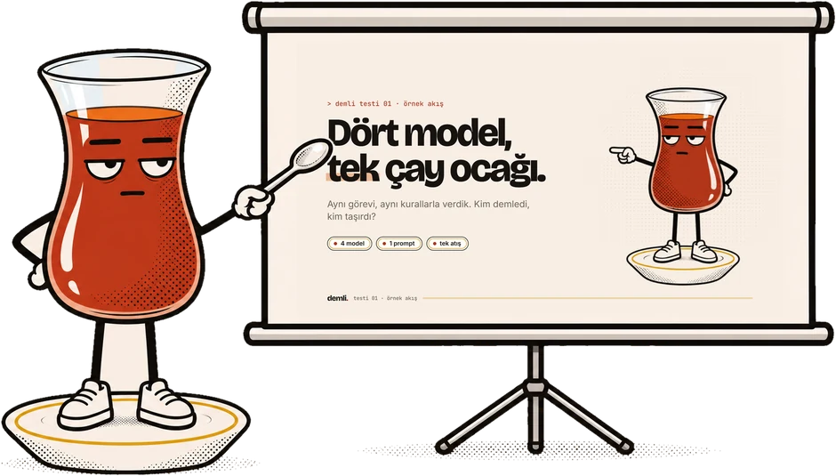

demli testi 01 · örnek akış
Demli Slayt · örnek akış
Sunum motorunun bütün kalıpları tek akışta: kapak, çay ölçer, adisyon, karşılaştırma, hüküm ve canlı simülasyon. Sayılar örnek veridir; slaytlarda damgası var.
Videolarda ekranda duran sunumlar. Kurulum yok: tarayıcıda açılır, klavyeyle gezilir. Her yeni videonun sunumu buraya eklenir.
1 sunum · en yenisi üstte

Sunum motorunun bütün kalıpları tek akışta: kapak, çay ölçer, adisyon, karşılaştırma, hüküm ve canlı simülasyon. Sayılar örnek veridir; slaytlarda damgası var.
Her video yayına girdiğinde sunumu da buraya eklenir: aynı motor, aynı çay ölçer, gerçek sonuçlar. Kaynak dosyaları GitHub'daki demli-arena deposunda.